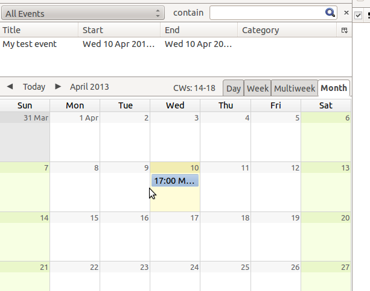

Now we've got the basics of webdav browsing working, we can add some properties to allow Milton's Caldav framework to talk to Caldav clients.
The first thing you need to do is tell milton where a user's calendars are. So just add the @Calendars annotation to the getCalendarsHome method:
@ChildrenOf
@Calendars
public Calendar getCalendarsHome(CalendarsHome cals) {
return new Calendar(cals.user);
}
And we need to have unique ID's and modified dates for calendar events, because caldav clients use this information to syncronise their copy of the events database:
@UniqueId
public long getUniqueId(Meeting m) {
return m.getId();
}
@ModifiedDate
public Date getModifiedDate(Meeting m) {
return m.getModifiedDate();
}
And, some caldav clients want to retrieve the calendar data as a property instead of by downloading it. To permit this we just add the @IcalData annotation to our @Get method:
@Get
@ICalData
public byte[] getMeetingData(Meeting m) {
return m.getIcalData();
}
Thats it! There's a bunch of other things you can, and probably should, implement. Such as @Ctag and @CalendarColor, but milton provides sensible defaults for those.
So i just connected to thunderbird using:
URL: http://localhost:8080/users/jack/cals/default/
User: jack
Password: password
Then i created an event, and it looks like this:
